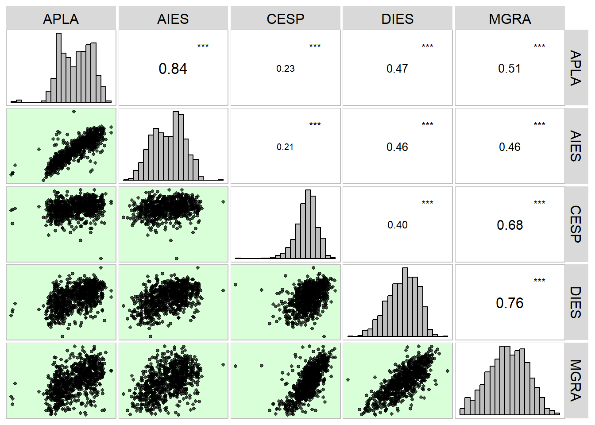

library(tidyverse)
library(metan) # estatísticas descritivas
library(rio) # importação/exportação de dados
library(AgroR)
library(broom)11. Regressão e correlação
Pacotes
Regressão linear
Introdução
A análise de regressão tem como objetivo verificar como uma variável independente (x) influencia a resposta de uma variável dependente (y). A análise de regressão é amplamente utilizada nas ciências agrárias. O modelo mais simples de regressão linear é a de primeiro grau, descrita conforme o modelo a seguir:
\[ Y_i = {\beta _0} + {\beta _1}x + \varepsilon_i \]
Onde \(Y_i\) é o valor observado da variável dependente no i-ésimo nível da variável independente; \(x_i\) é o valor do i-ésimo nível da variável independente, \(\beta_0\) é o intercepto (valor que a reta predita intercepta o eixo y quando x é igual a zero); \(\beta_1\) é a inclinação da reta (quantas unidades mudam em y a cada unidade alterada em x) e \(\varepsilon\) é o desvio.
O problema
Note
No seguinte exemplo é apresentado o valor do rendimento de grãos de um certo híbrido de milho (eixo y) em função da dose de N (eixo x).
x <- seq(0, 150, by = 25)
y <- c(8.6, 8.9, 9.5, 9.9, 10, 10.2, 10.5)
df <- data.frame(x = x, y = y)
# plotar os valores
ggplot(df, aes(x, y)) +
geom_point(size = 4, color = "red") +
geom_smooth(se = FALSE, method = "lm") +
scale_x_continuous(breaks = x) +
labs(x = "Dose de N (Kg/ha)",
y= "Rendimento de grãos (t/ha)")`geom_smooth()` using formula 'y ~ x'O problema consiste em obter o valor de \(\beta_0\) e \(\beta_1\) de melhor ajuste para a equação, de modo que a soma de quadrado dos desvios (diferença entre os pontos observados e a reta de predição) seja mínima. Assim, adota-se o critério de obter a solução que minimiza soma dos quadrados dos resídulos (\(\sum\nolimits_{i = 1}^n {{e_i}^2}\)), método conhecido como Método dos Mínimos Quadrados
\[ {b_1} = \frac{{S{P_{xy}}}}{{S{Q_x}}} \]
Note
\[ {b_0} = \bar y - {b_1} \times \bar x \]
Note
Onde
\[ S{P_{xy}} = \sum\limits_{i = 1}^n {{x_i}{y_i}} - \frac{{\left( {\sum\limits_{i = 1}^n {{x_i}} } \right)\left( {\sum\limits_{i = 1}^n {{y_i}} } \right)}}{n} \tag{1}\]
\[ \\S{Q_x} = \sum\limits_{i = 1}^n {x_i^2} - \frac{{{{\left( {\sum\limits_{i = 1}^n {x_i^{}} } \right)}^2}}}{n} \tag{2}\]
\[ \\S{Q_y} = \sum\limits_{i = 1}^n {y_i^2} - \frac{{{{\left( {\sum\limits_{i = 1}^n {y_i^{}} } \right)}^2}}}{n} \tag{3}\]
De posse deste valor pode ser obtidas as somas de quadrados:
\[ S{Q_{total}} = S{Q_y} \]
\[ S{Q_{reg}} = \frac{{S{P_{xy}}^2}}{{S{Q_x}}} \]
\[ S{Q_{erro}} = S{Q_{total}} - S{Q_{reg}} \]
Estimação dos coeficientes
No seguinte exemplo, são calculados as somas de x e y, as somas de \(x^2\) e \(y^2\) e também as somas de \(x\times y\) .
df2 <-
mutate(df,
x2 = x ^ 2,
y2 = y ^ 2,
xy = x * y)
df2 x y x2 y2 xy
1 0 8.6 0 73.96 0.0
2 25 8.9 625 79.21 222.5
3 50 9.5 2500 90.25 475.0
4 75 9.9 5625 98.01 742.5
5 100 10.0 10000 100.00 1000.0
6 125 10.2 15625 104.04 1275.0
7 150 10.5 22500 110.25 1575.0# número de pontos
(n <- length(x))[1] 7# soma de xi
(sum_xi <- sum(x))[1] 525# soma de xi ao quadrado
(sum_xi2 <- sum(x ^ 2))[1] 56875# soma de yi
(sum_yi <- sum(y))[1] 67.6# soma de yi ao quadrado
(sum_yi2 <- sum(y ^ 2))[1] 655.72# soma de xi * yi
(sum_xiyi <- sum(x * y))[1] 5290Note que estas mesmas somas podem ser obtidas facilmente utilizando duas outras abordagens. A primeira usando a função colSums() e outra a função apply().
colSums(df2) x y x2 y2 xy
525.00 67.60 56875.00 655.72 5290.00 apply(df2, 2, sum) x y x2 y2 xy
525.00 67.60 56875.00 655.72 5290.00 De posse destes valores é possível computar a soma de produtos de x e y , bem como suas somas de quadrados.
# soma de produtos de X e Y
(SPxy <- sum_xiyi - (sum_xi * sum_yi) / n)[1] 220# soma de quadrados de X
(SQx <- sum_xi2 - (sum_xi ^2) / n)[1] 17500# soma de quadrados de Y
(SQy <- sum_yi2 - (sum_yi ^ 2) / n)[1] 2.897143# computar o b1
(b1 <- SPxy / SQx)[1] 0.01257143# computar o b0
(b0 <- mean(y) - b1 * mean(x))[1] 8.714286Regressão ajustada e tabela ANOVA
A equação ajustada é então \(y = 8,7142 + 0,01257x\). As somas de quadrados de regressão e resídulo são dadas à seguir
# soma de quadrado total
(SQtot <- SQy)[1] 2.897143(SQreg <- SPxy ^ 2 / SQx)[1] 2.765714(SQerro <- SQtot - SQreg)[1] 0.1314286Pode-se ainda obter a análise da variância da regressão, cujo esquema é apresentado a seguir na Tabela.
FV <- c("Regressão", "Desvio", "Total")
GL <- c(1, n - 2, n - 1)
SQ <- c(SQreg, SQerro, SQtot)
QM <- SQ / GL
FC <- c(QM[[1]] / QM[[3]], NA, NA)
data.frame(FV, GL, SQ, QM, FC) |> knitr::kable()| FV | GL | SQ | QM | FC |
|---|---|---|---|---|
| Regressão | 1 | 2.7657143 | 2.7657143 | 5.727811 |
| Desvio | 5 | 0.1314286 | 0.0262857 | NA |
| Total | 6 | 2.8971429 | 0.4828571 | NA |
Grau de ajuste do modelo
A proporção da variação de y que é explicada pelos níveis de x é conhecido como coeficiente de determinação (\(R^2\)) e é calculado por:
\[ R^2 = \frac{SQ_{reg}}{SQ_{tot}} \]
(R2 <- SQreg / SQtot)[1] 0.9546351Pode-se ainda obter o (\(R^2\)) ajustado (\(R^2_{adj}\)) . O \(R^2_{adj}\) pode ser usado quando desejar comparar modelos que têm diferentes números de preditores. O (\(R^2\)) sempre aumenta quando você adiciona um preditor ao modelo, mesmo quando não existe uma verdadeira melhoria ao modelo. O valor de (\(R^2_{adj}\)) ajustado o número de preditores no modelo para ajudá-lo a escolher o modelo correto1, sendo calculado por:
\[ R^2_{adj} = 1 -\frac{(n - 1)(1 - R^2)}{n - p} \] Sendo que para a regressão linear simples estima-se 2 parâmetros (\(\beta_0\) e \(\beta_1\)).
R2adj <- 1 - ((n - 1)*(1 - R2)) / (n - 2)
R2adj[1] 0.9455621Valores preditos e resíduos
Os valores preditos são obtidos substituindo-se o x da equação pelo valor de x testado. Como o R trabalha de forma vetorizada, podemos facilmente obter os valores preditos para cada elemento de x com:
(pred <- b0 + b1 * x)[1] 8.714286 9.028571 9.342857 9.657143 9.971429 10.285714 10.600000Os desvios são computados como a diferença entre o valor observado e o valor predito. Assim, pode calculá-los com:
(desvios <- y - pred)[1] -0.11428571 -0.12857143 0.15714286 0.24285714 0.02857143 -0.08571429
[7] -0.10000000Fica fácil identificar estes desvios plotando-os no gráfico abaixo.
# gráfico base
ggplot(df, aes(x, y)) +
geom_segment(aes(x = x,
y = y,
xend = x,
yend = pred)) +
geom_point(size = 4, color = "red") +
geom_smooth(se = FALSE, method = "lm") +
scale_x_continuous(breaks = x) +
labs(x = "Dose de N (Kg/ha)",
y= "Rendimento de grãos (t/ha)")`geom_smooth()` using formula 'y ~ x'A soma de quadrado dos desvios obtida anteriormente pode ser obtida aqui também, ao somarmos o quadrado dos desvios.
sum(desvios ^ 2)[1] 0.1314286A função lm()
No R, a função lm() (linear model) pode ser utilizada para ajustar a equação linear. Para isso, utiliza-se uma fórmula to tipo y ~ x (ou seja, y em função de x). Note que y e x são os nomes das variáveis presentes no data frame, informado no argumento data.
# ajustar modelo de regressão linear
mod <- lm(y ~ x, data = df)
# coeficientes
summary(mod)
Call:
lm(formula = y ~ x, data = df)
Residuals:
1 2 3 4 5 6 7
-0.11429 -0.12857 0.15714 0.24286 0.02857 -0.08571 -0.10000
Coefficients:
Estimate Std. Error t value Pr(>|t|)
(Intercept) 8.714286 0.110472 78.88 6.2e-09 ***
x 0.012571 0.001226 10.26 0.000151 ***
---
Signif. codes: 0 '***' 0.001 '**' 0.01 '*' 0.05 '.' 0.1 ' ' 1
Residual standard error: 0.1621 on 5 degrees of freedom
Multiple R-squared: 0.9546, Adjusted R-squared: 0.9456
F-statistic: 105.2 on 1 and 5 DF, p-value: 0.0001513# Análise de variância
anova(mod)Analysis of Variance Table
Response: y
Df Sum Sq Mean Sq F value Pr(>F)
x 1 2.76571 2.76571 105.22 0.0001513 ***
Residuals 5 0.13143 0.02629
---
Signif. codes: 0 '***' 0.001 '**' 0.01 '*' 0.05 '.' 0.1 ' ' 1
Conferindo os resultados
Compare os valores obtidos no cálculo passo-a-passo com os valores dos coeficientes obtidos com a função summary(mod) e anova(mod). Os valores conferem?
No código abaixo é criado um novo conjunto de dados, contendo os valores preditos e os resíduos.
# valores preditos
pred <-
df %>%
mutate(predito = predict(mod),
residual = y - predito)
pred x y predito residual
1 0 8.6 8.714286 -0.11428571
2 25 8.9 9.028571 -0.12857143
3 50 9.5 9.342857 0.15714286
4 75 9.9 9.657143 0.24285714
5 100 10.0 9.971429 0.02857143
6 125 10.2 10.285714 -0.08571429
7 150 10.5 10.600000 -0.10000000Os valores preditos são obtidos ao substituir o x da equação pelo valor utilizado. Pode-se criar uma função para retornar os valores preditos utilizando um modelo ajustado e o valor de x desejado. No seguinte exemplo, o valor de y quando x é 75 é calculado e plotado no gráfico.
# modelo ajustado o valor predito para x = 75
# função auxiliar
pred_linear <- function(mod, x){
b0 <- coef(mod)[[1]]
b1 <- coef(mod)[[2]]
pred <- b0 + b1 * x
return(pred)
}
pred_75 <- pred_linear(mod, 75)
pred_75[1] 9.657143ggplot(df, aes(x, y)) +
geom_smooth(se = FALSE, method = "lm") +
geom_segment(aes(x = 75, y = 8.5, xend = 75, yend = pred_75)) +
geom_segment(aes(x = 0, y = pred_75, xend = 75, yend = pred_75)) +
geom_point(aes(x = 75, y = pred_75), color = "blue", size = 4) +
geom_point(size = 4, color = "red") +
scale_x_continuous(breaks = x) +
labs(x = "Dose de N (Kg/ha)",
y= "Rendimento de grãos (t/ha)",
title = "Reta predita para o modelo de regressão",
subtitle = "O ponto azul representa o RG predito com 75 kg/ha de N")`geom_smooth()` using formula 'y ~ x'
Regressão linear com repetições
url <- "https://bit.ly/df_biostat"
df_reg <- import(url, sheet = "REG_DEL_DATA", setclass = "tbl")
# anova em DBC
df_factors <- df_reg %>% as_factor(1:2)
anova <- aov(RG ~ DOSEN + BLOCO, data = df_factors)
tidy(anova) %>% as.data.frame() term df sumsq meansq statistic p.value
1 DOSEN 4 14.8617548 3.71543870 116.2335 1.737670e-09
2 BLOCO 3 0.1568282 0.05227605 1.6354 2.333476e-01
3 Residuals 12 0.3835836 0.03196530 NA NA# regressão
reg <- lm(RG ~ DOSEN, data = df_reg)
tidy(reg) %>% as.data.frame() term estimate std.error statistic p.value
1 (Intercept) 8.434550 0.078237590 107.80687 9.383071e-27
2 DOSEN 0.024222 0.001277614 18.95877 2.419233e-13# anova da regressão
anova_reg <- aov(reg)
tidy(anova_reg) %>% as.data.frame() %>% slice(1) term df sumsq meansq statistic p.value
1 DOSEN 1 14.66763 14.66763 359.435 2.419233e-13# pontos plotados
ggplot(df_reg, aes(DOSEN, RG)) +
geom_point(color = "red") +
stat_summary(geom = "point",
fun = mean,
shape = 23) +
labs(x = "Dose de N (Kg/ha)",
y = "Rendimento de grãos (t/ha)") +
geom_smooth(method = "lm", se = FALSE)`geom_smooth()` using formula 'y ~ x'
Polinômio de segundo grau
A regressão polinomial de segundo grau (que também é linear!) é uma outra opção muito útil para analisar dados que apresentem comportamento de parábola, por vezes observado em ensaios que testam dosagens de algum produto/fertilizante, etc. Neste tipo, um parâmetro a mais é adicionado ao modelo, ficando na forma:
\[ Y_i = {\beta _0} + {\beta _1}x + {\beta _2}x^2 + \varepsilon_i \]
Como motivação, utilizaremos os dados abaixo. Para ajustar um modelo polinomial, utilizamos a função poly() e informamos o grau do polinômio desejado. É válido lembrar, que o grau máximo possível de polinômio é dado pelo número de níveis da variável independente/preditora menos 1.
DOSEN <- c(0, 50, 100, 150, 200, 250)
RG <- c(7.1, 7.3, 7.66, 7.71, 7.62, 7.6)
df2 <- data.frame(DOSEN = DOSEN, RG = RG)
# modelo de regressão
mod2 <- lm(RG ~ poly(DOSEN, 2, raw = TRUE), data = df2)
summary(mod2)
Call:
lm(formula = RG ~ poly(DOSEN, 2, raw = TRUE), data = df2)
Residuals:
1 2 3 4 5 6
0.02500 -0.08243 0.07371 0.02343 -0.06329 0.02357
Coefficients:
Estimate Std. Error t value Pr(>|t|)
(Intercept) 7.075e+00 7.013e-02 100.882 2.15e-06 ***
poly(DOSEN, 2, raw = TRUE)1 7.184e-03 1.319e-03 5.445 0.0122 *
poly(DOSEN, 2, raw = TRUE)2 -2.071e-05 5.066e-06 -4.089 0.0264 *
---
Signif. codes: 0 '***' 0.001 '**' 0.01 '*' 0.05 '.' 0.1 ' ' 1
Residual standard error: 0.07738 on 3 degrees of freedom
Multiple R-squared: 0.9389, Adjusted R-squared: 0.8982
F-statistic: 23.06 on 2 and 3 DF, p-value: 0.0151# valores preditos
pred2 <-
df2 %>%
mutate(predito = predict(mod2),
residual = RG - predito)
pred2 DOSEN RG predito residual
1 0 7.10 7.075000 0.02500000
2 50 7.30 7.382429 -0.08242857
3 100 7.66 7.586286 0.07371429
4 150 7.71 7.686571 0.02342857
5 200 7.62 7.683286 -0.06328571
6 250 7.60 7.576429 0.02357143# gráfico base
p1 <-
ggplot(df2, aes(DOSEN, RG)) +
geom_point(size = 4, color = "red") +
geom_smooth(se = FALSE,
method = "lm",
formula = y ~ poly(x, 2)) +
scale_x_continuous(breaks = DOSEN) +
labs(x = "Dose de N (Kg/ha)",
y = "Rendimento de grãos (t/ha)")
p1
O ponto em X (dose de N) em que a produtividade é máxima é chamado de máxima eficiência técnica (MET) e pode ser estimado por:
\[ MET = \frac{{ - {\beta _1}}}{{2 \times {\beta _2}}} \]
Substituindo com os parâmetros estimados, temos:
\[ MET = \frac{{ - 0,007184}}{{2 \times -2,071^{-05}}} \approx 173,4 \]
No R, podemos criar uma função auxiliar para calcular o ponto de MET.
# máxima eficiência técnica
# mod é o modelo quadrático ajustado
met <- function(mod){
b1 <- coef(mod)[[2]]
b2 <- coef(mod)[[3]]
res <- -b1 / (2 * b2)
return(res)
}
x_met <- met(mod2)
x_met[1] 173.4138Em nosso exemplo, o ponto em x (dose de N) que proporciona o máximo rendimento predito é 173,413. Assim para sabermos qual é este rendimento estimado, basta substituir o x da equação por 173,4: \(y = 7,075 + 0,007184\times 173,413 -2,071^{-05}\times 173,413^2 \approx 7,70\)
Uma função auxiliar para predição de y em um determinado valor de x considerando um modelo quadrático ajustado é fornecida abaixo.
# valor predito para x = MET
# função auxiliar
pred_quad <- function(mod, x){
b0 <- coef(mod)[[1]]
b1 <- coef(mod)[[2]]
b2 <- coef(mod)[[3]]
pred <- b0 + b1 * x + b2 * x ^ 2
return(pred)
}
pred_met <- pred_quad(mod2, x = x_met)
pred_met[1] 7.697927Outro ponto importante que é possível de estimar utilizando uma equação de segundo grau, é a máxima eficiência econômica (MEE), ou seja, a dose máxima, neste caso de nitrogênio, em que é possível aplicar obtendo-se lucro. Este ponto é importante, pois a partir de uma certa dose, os incrementos em produtividade não compensariam o preço pago pelo nitrogênio aplicado. Este ponto pode ser facilmente estimado por:
\[ MEE = MET + \frac{u}{{2 \times \beta_2 \times m}} \]
onde u e m são os preços do nitrogênio e do milho em grão, respectivamente, na mesma unidade utilizada para a estimativa da equação (neste caso, preço do nitrogênio por kg e preço do milho por tonelada). Considerando o preço de custo do nitrogênio como R 3 por kg e o preço de venda do milho a 1,300 por tonelada, substituindo-se na formula obtêm-se:
\[ MEE = 173,41 + \frac{{3,0}}{{2 \times (-2,071^{-05}) \times 1.300}} \approx 117 \]
mee <- function(mod, px, py){
x_met <- met(mod)
mee <- x_met + px / (2 * coef(mod)[[3]] * py)
return(mee)
}
x_mee <- mee(mod2, 3, 1300)
x_mee[1] 117.7109Assim, a dose máxima de nitrogênio que em que os incrementos de produtividade são lucrativos é de \(\approx 117\) Kg ha\(^{-1}\), em um rendimento estimado de \(\approx\) 7,63 Mg ha\(^{-1}\).
# Máxima eficiência econõmica (y)
rg_mee <- pred_quad(mod2, x = x_mee)
rg_mee[1] 7.633655De posse das informações, um gráfico elaborado, que deveria ser apresentado em todo trabalho deste tipo pode ser confeccionado com a função plot_lines() do pacote metan combinado com algumas funções do pacote ggplot2. Sugiro a leitura do capítulo 8 deste material para mais informações sobre confecção de gráficos no R.
p1 +
labs(title = "Equação quadrática",
subtitle = "Trigângulo e cículo representam os pontos de MME e MET, respectivamente",
caption = "MME = Máxima eficiência econômica\n MET = máxima eficiência técnica") +
# Linhas e ponto da MET
geom_segment(aes(x = x_met, y = pred_met, xend = x_met, yend = 6.7)) +
geom_segment(aes(x = 0, y = pred_met, xend = x_met, yend = pred_met)) +
geom_point(aes(x = x_met, y = pred_met), shape = 19, size = 3, color = "blue") +
# Linhas e ponto da MEE
geom_segment(aes(x = x_mee, y = rg_mee, xend = x_mee, yend = 6.7), linetype = 2) +
geom_segment(aes(x = 0, y = rg_mee, xend = x_mee, yend = rg_mee), linetype = 2) +
geom_point(aes(x = x_mee, y = rg_mee), shape = 17, size = 3, color = "blue") +
# Equação no gráfico
geom_text(aes(0, 7.9,
label=(
paste(
expression("y = 7.075 + 0.007184x - 2,071e"^{-5}*"x"^2*" R" ^2*" = 0,938 "))
)
),
hjust = 0,
size = 5,
col = "black",
parse = TRUE) Exercício
Dados
Neste exemplo, serão utilizados dados de produtividade de grãos de milho (Kg /ha) de acordo com diferentes doses de dejeto suíno (m3/ha) aplicadas na cultura do milho2.
url <- "https://bit.ly/df_biostat"
reg_ex <- import(url, sheet = "REG_EXERCICIO", setclass = "tbl")
reg_ex# A tibble: 4 × 2
DOSE RG
<dbl> <dbl>
1 20 7.09
2 30 7.37
3 40 8.28
4 50 8.32Cálculo dos coeficientes (manual)
- Ajuste o modelo de regressão linear da forma \(y_i = \beta_0 + \beta_1x_i\), apresentando o valor dos parâmetros \(\beta_0\) e \(\beta_1\).
(x <- reg_ex$DOSE)[1] 20 30 40 50(y <- reg_ex$RG)[1] 7.09 7.37 8.28 8.32# número de pontos
(n <- length(x))[1] 4# médias
(mx <- mean(x))[1] 35(my <- mean(y))[1] 7.765# soma de x
(sumx <- sum(x))[1] 140# soma de y
(sumy <- sum(y))[1] 31.06# soma de x * y
(sumxy <- sum(x * y))[1] 1110.1# soma de x ao quadrado
(sumx2 <- sum(x ^ 2))[1] 5400# soma de y ao quadrado
(sumy2 <- sum(y ^ 2))[1] 242.3658# soma de produtos xy (SPxy)
(SPxy <- sumxy - (sumx * sumy / n))[1] 23# soma de quadrados de x SQx
(SQx <- sumx2 - sumx ^ 2 / n)[1] 500# soma de quadrados de y
(SQy <- sumy2 - sumy ^ 2 / n)[1] 1.1849## coeficientes
# b1
(b1 <- SPxy / SQx)[1] 0.046# b0
(b0 <- my - mx * b1)[1] 6.155# equação: y = 6150 + 6,15x- Interprete o valor dos coeficientes, indicando sua aplicação prática.
Interpretação dos coeficientes
O intercept indica ….
o coeficiente angular…
- Calcule o valor do coeficiente de determinação (R2) do modelo ajustado e interprete os resultados
################## SOMAS DE QUADRADOS DA REGRESSÃO E R2 ############
# soma de quadrado total
(SQtot <- SQy)[1] 1.1849# soma de quadrados da regressão
(SQreg <- SPxy ^ 2 / (SQx))[1] 1.058# soma de quadrados do resíduo
(SQres <- SQtot - SQreg)[1] 0.1269# coeficiente de determinação
(R2 <- SQreg / SQtot)[1] 0.8929024- Realize a predição da produtividade para uma dose de dejeto aplicado de 35 metros cúbicos por ha.
# y predito com x = 35
(yx35 <- b0 + b1 * 35)[1] 7.765- Ajuste a regressão no software R utilizando a função lm(). Após, construa um gráfico de dispersão com a reta de predição do modelo.
reg <- lm(RG ~ DOSE, data = reg_ex)
# coeficientes e R2
summary(reg)
Call:
lm(formula = RG ~ DOSE, data = reg_ex)
Residuals:
1 2 3 4
0.015 -0.165 0.285 -0.135
Coefficients:
Estimate Std. Error t value Pr(>|t|)
(Intercept) 6.15500 0.41390 14.871 0.00449 **
DOSE 0.04600 0.01126 4.083 0.05506 .
---
Signif. codes: 0 '***' 0.001 '**' 0.01 '*' 0.05 '.' 0.1 ' ' 1
Residual standard error: 0.2519 on 2 degrees of freedom
Multiple R-squared: 0.8929, Adjusted R-squared: 0.8394
F-statistic: 16.67 on 1 and 2 DF, p-value: 0.05506# anova
anova(reg)Analysis of Variance Table
Response: RG
Df Sum Sq Mean Sq F value Pr(>F)
DOSE 1 1.0580 1.05800 16.674 0.05506 .
Residuals 2 0.1269 0.06345
---
Signif. codes: 0 '***' 0.001 '**' 0.01 '*' 0.05 '.' 0.1 ' ' 1Gráfico
Mostrar código
library(ggpmisc) # adiciona a equação no gráficoWarning: package 'ggpmisc' was built under R version 4.2.1Carregando pacotes exigidos: ggpp
Attaching package: 'ggpp'The following object is masked from 'package:ggplot2':
annotateMostrar código
p1 <-
ggplot(reg_ex, aes(DOSE, RG)) +
geom_smooth(se = FALSE, method = "lm") +
geom_point(size = 4, color = "blue") +
stat_poly_eq(formula = y ~ x,
aes(label = paste(..eq.label.., ..rr.label.., sep = "~~~~")),
coef.digits = 5) +
labs(x = expression(Doses~de~dejeto~(m^3~ha^{-1})),
y = expression(Rendimento~de~grãos~(t~ha^{-1})),
title = "Rendimento de grãos em função da dose de dejeto")
p2 <-
ggplot(reg_ex, aes(DOSE, RG)) +
geom_abline(intercept = b0,
slope = b1,
color = "red") +
geom_smooth(se = FALSE, method = "lm") +
geom_point(size = 4, color = "blue") +
stat_poly_eq(formula = y ~ x,
aes(label = paste(..eq.label.., ..rr.label.., sep = "~~~~")),
coef.digits = 5) +
labs(x = expression(Doses~de~dejeto~(m^3~ha^{-1})),
y = expression(Rendimento~de~grãos~(t~ha^{-1})),
title = expression(Compreendendo~o~intercept~(beta[0]))) +
scale_x_continuous(limits = c(0, 50),
expand = expansion(c(0, 0.05))) +
scale_y_continuous(limits = c(6, 9),
breaks = c(6, 6.155, 7, 8, 9)) +
theme(panel.grid.minor = element_blank())
p1 + p2`geom_smooth()` using formula 'y ~ x'`geom_smooth()` using formula 'y ~ x'Valores preditos
Para obter os valores preditos, precisamos considerar os parâmetros estimados da regressão linear, substituindo o x pelos valores observados de x. Felizmente, a vetorização proporcionada pelo R, nos facilita este procedimento, bastando realizar o seguinte comando
(pred <- b0 + b1 * x)[1] 7.075 7.535 7.995 8.455Os valores preditos também podem ser obtidos com a função predict(), informando o modelo ajustado
(pred2 <- predict(reg)) 1 2 3 4
7.075 7.535 7.995 8.455 Residuais
Os resíduos são obtidos pela diferença entre os valores observados e os preditos pelo modelo ajustado. Para isso, utilizamos o seguinte comando:
(res <- y - pred)[1] 0.015 -0.165 0.285 -0.135# o mesmo com a função residuals()
(res2 <- residuals(reg)) 1 2 3 4
0.015 -0.165 0.285 -0.135 Apenas para fins de comprovação, observe que a soma de quadrado do resíduo obtida anteriormente pode ser calculada agora como:
(sqres2 <- sum(res ^ 2))[1] 0.1269Por fim, é possível mutar o conjunto de dados incluindo os valores preditos e residuais.
mutate(reg_ex,
predito = pred,
residual = res)# A tibble: 4 × 4
DOSE RG predito residual
<dbl> <dbl> <dbl> <dbl>
1 20 7.09 7.07 0.0150
2 30 7.37 7.53 -0.165
3 40 8.28 7.99 0.285
4 50 8.32 8.45 -0.135 Correlação
Conhecer o grau de associação linear entre caracteres é de fundamental importância em um programa de melhoramento genético vegetal. Esta importância aumenta, principalmente se algum caractere desejável é de difícil mensuração, ou apresenta baixa herdabilidade. O coeficiente de correlação produto-momento de (Pearson, 1920)3, r, vem sendo amplamente utilizado para este fim. Embora o mérito desta análise seja atribuído à Karl Pearson, o método foi originalmente concebido por Francis Galton, que definiu o termo correlação como como o seguinte: duas variáveis são ditas correlacionadas quando a variação de uma é acompanhada na média, mais ou menos a variação da outra, e no mesmo sentido (Galton, 1888)4.
Cálculo do coeficiente de correlação
Utilizando o método dos mínimos quadrados, a correlação entre duas variáveis (x e y) é dada por:
\[ r = \frac{SP_{xy}}{\sqrt{SQ_x\times SQ_y}} \]
As definições de \(SP_{xy}\), \(SQ_{x}\) e \(SQ_{y}\) foram apresentadas nas Equações Equation 1, Equation 2 e Equation 3, respectivamente.
A significância da correlação (r) é testada utilizando um teste t com \(t_{\alpha(n-2)}\) graus liberdade. As hipóteses são:
\[ {H_0}:r = 0 \]
\[ {H_1}:r \ne 0 \]
O valor de t calculado é dado por:
\[ {t_0} = r\sqrt {\frac{{n - 2}}{{1 - {r^2}}}} \]
Por fim, compara-se o t calculado com o tabelado ao nível \(\alpha\) de significância de erro (teste bilateral), com n menos dois graus liberdade.
\[ {t_0} > {t_{\alpha (n - 2)}} = r \ne 0 \]
A função cor() do R
Utilizando a função do R cor() é possível obter o coeficiente de correlação entre duas variáveis, por exemplo, APLA e AIES do seguinte conjunto de dados:
url <- "https://bit.ly/df_biostat"
df_mat <-
import(url, sheet = "maize", setclass = "tbl") |>
select(APLA:MGRA)
# correlação de pearson (APLA e AIES)
cor(df_mat$APLA, df_mat$AIES)[1] 0.8407699Uma matriz de correlação também pode ser calculada informando um data frame de variáveis numéricas
# Matriz gráfica de correlação
cor(df_mat) APLA AIES CESP DIES MGRA
APLA 1.0000000 0.8407699 0.2349817 0.4693013 0.5096475
AIES 0.8407699 1.0000000 0.2080551 0.4588893 0.4649353
CESP 0.2349817 0.2080551 1.0000000 0.3985263 0.6763286
DIES 0.4693013 0.4588893 0.3985263 1.0000000 0.7649486
MGRA 0.5096475 0.4649353 0.6763286 0.7649486 1.0000000Usando a função corr_plot() do pacote metan, é possível obter uma matriz mista (gráfico e número), contendo a distribuição dos pontos e o coeficiente de correlação entre as variáveis.
# Matriz gráfica de correlação
corr_plot(df_mat)
Exercício
Dados
Neste exemplo, serão utilizados dados referentes ao número de grãos (NGRA) e massa de grãos (MGRA) observados em 15 espigas de milho (n = 15).
url <- "https://bit.ly/df_biostat"
cor_ex <- import(url, sheet = "COR_EXERCICIO", setclass = "tbl")
(x <- cor_ex$NGRA) [1] 519 522 624 670 518 547 670 546 444 611 557 702 443 430 481(y <- cor_ex$MGRA) [1] 173.5 213.5 221.1 261.5 220.1 177.8 250.8 192.0 193.5 255.6 245.9 207.4
[13] 185.3 166.6 202.4(n <- length(x))[1] 15Método dos mínimos quadrados
(xy <- x * y) [1] 90046.5 111447.0 137966.4 175205.0 114011.8 97256.6 168036.0 104832.0
[9] 85914.0 156171.6 136966.3 145594.8 82087.9 71638.0 97354.4(x2 <- x ^ 2) [1] 269361 272484 389376 448900 268324 299209 448900 298116 197136 373321
[11] 310249 492804 196249 184900 231361(y2 <- y ^ 2) [1] 30102.25 45582.25 48885.21 68382.25 48444.01 31612.84 62900.64 36864.00
[9] 37442.25 65331.36 60466.81 43014.76 34336.09 27755.56 40965.76# soma de xy
(somxy <- sum(xy))[1] 1774528# soma de x
(somx <- sum(x))[1] 8284# soma de y
(somy <- sum(y))[1] 3167# soma de x2
(somx2 <- sum(x2))[1] 4680690# soma de y2
(somy2 <- sum(y2))[1] 682086# adiciona as colunas nos dados originais usando mutate()
cor_ex <-
mutate(cor_ex,
xy = xy,
x2 = x2,
y2 = y2)
data.frame(cor_ex) NGRA MGRA xy x2 y2
1 519 173.5 90046.5 269361 30102.25
2 522 213.5 111447.0 272484 45582.25
3 624 221.1 137966.4 389376 48885.21
4 670 261.5 175205.0 448900 68382.25
5 518 220.1 114011.8 268324 48444.01
6 547 177.8 97256.6 299209 31612.84
7 670 250.8 168036.0 448900 62900.64
8 546 192.0 104832.0 298116 36864.00
9 444 193.5 85914.0 197136 37442.25
10 611 255.6 156171.6 373321 65331.36
11 557 245.9 136966.3 310249 60466.81
12 702 207.4 145594.8 492804 43014.76
13 443 185.3 82087.9 196249 34336.09
14 430 166.6 71638.0 184900 27755.56
15 481 202.4 97354.4 231361 40965.76# soma de produtos xy
(sxy <- somxy - (somx * somy / n))[1] 25499.77# soma de quadrados de x
(sx <- somx2 - somx ^ 2 / n)[1] 105712.9# soma de quadrados de y
(sy <- somy2 - somy ^ 2 / n)[1] 13426.77# coeficiente de correlaçao
(r <- sxy / (sqrt(sx * sy)))[1] 0.6768405# t calculado
(tc <- r * sqrt((n - 2) / (1 - r ^ 2)))[1] 3.315153# t tabelado (cauda direita) = 2.16
# como é bicaudal, considera-se 0.05 / 2
qt(0.025, df = 13, lower.tail = FALSE)[1] 2.160369Função cor e cor.test()
# somente calcula o r
cor(x, y)[1] 0.6768405# computa o r e realiza o teste de hipótese
cor.test(x, y)
Pearson's product-moment correlation
data: x and y
t = 3.3152, df = 13, p-value = 0.005583
alternative hypothesis: true correlation is not equal to 0
95 percent confidence interval:
0.2519252 0.8829624
sample estimates:
cor
0.6768405 Footnotes
https://support.minitab.com/pt-br/minitab/18/help-and-how-to/modeling-statistics/regression/how-to/best-subsets-regression/interpret-the-results/all-statistics/↩︎
https://periodicos.uem.br/ojs/index.php/ActaSciTechnol/article/download/5312/5312/↩︎
PEARSON, K. Notes on the History of Correlation. Biometrika, v. 13, n. 1, p. 25–45, 1920↩︎
GALTON, F. Co-relations and their measurement, chiefly from anthropometric data. Proceedings of the Royal Society of London, v. 45, n. 273–279, p. 135–145, 1888↩︎